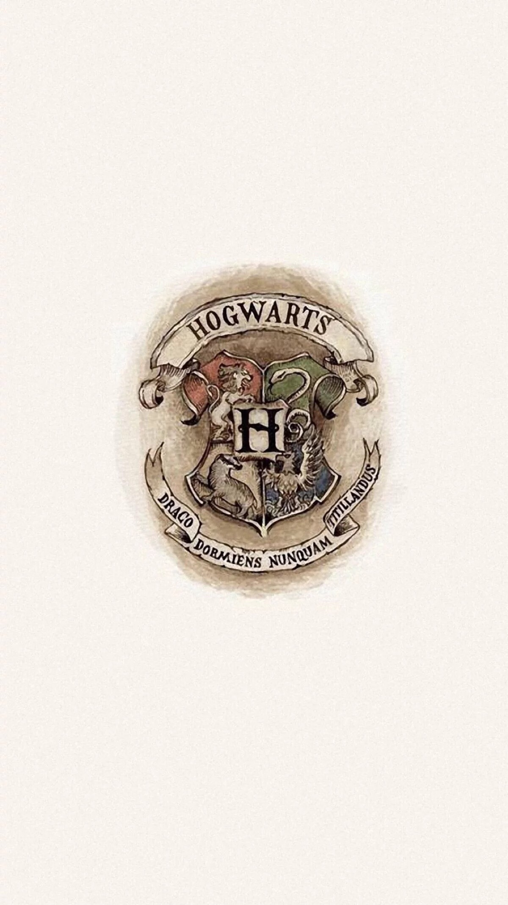
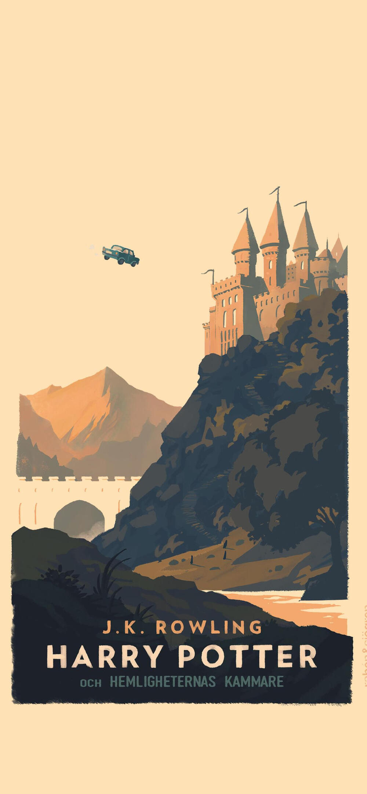

霍格沃茨魔法学校（Hogwarts School of Witchcraft and Wizardry）是一所位于苏格兰的古老魔法学校，被认为是世界上最优秀的魔法教育机构之一。学校由四位伟大的巫师——戈德里克·格兰芬多、萨拉查·斯莱特林、罗伊纳·拉文克劳和赫尔加·赫奇帕奇——在大约公元990年联合创立。霍格沃茨城堡不仅是学校的所在地，也是学生们的家，它坐落在湖边的山上，被魔法保护着，使得其在地图上不可标绘，确保了学校的秘密和安全。
霍格沃茨以其独特的教育体系和四个学院而闻名：格兰芬多、赫奇帕奇、拉文克劳和斯莱特林。每个学院都有其代表的颜色、动物和特质，这些学院由创始人的名字命名，并且各自强调不同的价值观和品质。新生入学时会通过分院帽（Sorting Hat）的仪式被分配到相应的学院，这个过程考虑了学生的性格和能力。
学校的教育不仅限于魔法技能的培养，还包括塑造学生的品格和价值观。霍格沃茨提供了一系列核心课程，如天文学、魔咒学、黑魔法防御术、草药学、魔法史、魔药学和变形学，以及选修课程，如算术占卜、古代如尼文、占卜学、保护神奇动物和麻瓜研究等。此外，学校还举办各种活动和比赛，如魁地奇球赛，这些都是霍格沃茨生活的重要组成部分。
霍格沃茨的格言是“眠龙勿扰”（Draco Dormiens Nunquam Titillandus），这句拉丁语格言提醒着学生们要尊重力量，不要轻易挑衅潜在的危险。学校的精神和传统深深植根于其历史和魔法世界的核心，使其成为了一个传奇的地方，不仅在学术上，也在学生们的心中占有特殊的位置。
return |
 |